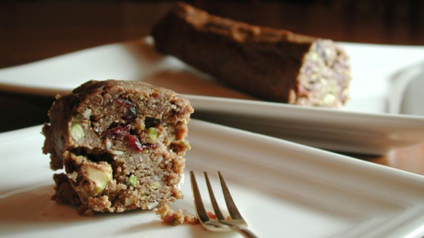

Chocolate Salami Recipe

"Weird name, great cookie! Prep time includes chilling." - Mirj2338
Ready in : 4 hours 5 minutes
Serves : 16
Ingredients :
- 1 cup sun-dried cherries
- 8 ounces semisweet chocolate
- 4 teaspoons butter
- 8 teaspoons sugar
- 2 ounces finely chopped almonds
- 2 ounces finely choppped pistachios
- 6 ounces crushed biscotti
- 2 teaspoons candied orange peel
- 1 ounce Grand Marnier
- 3 egg yolks
Directions :
- Soak cherries in warm water, about 30 minutes.
- Drain well.
- Place chocolate in bowl with butter, over a pot of simmering water until melted.
- Add sugar, almonds, pistachios, biscotti, drained cherries, orange peel and Grand Marnier.
- Mix well.
- Remove from heat and add the egg yolk and mix well.
- Cool completely.
- Form salami shape by rolling mixture in a sheet of wax paper.
- Refrigerate 4 hours or overnight.
- Slice and serve.
Editor's Note : "The Forbidden Meat. Wait, i've made this joke-."